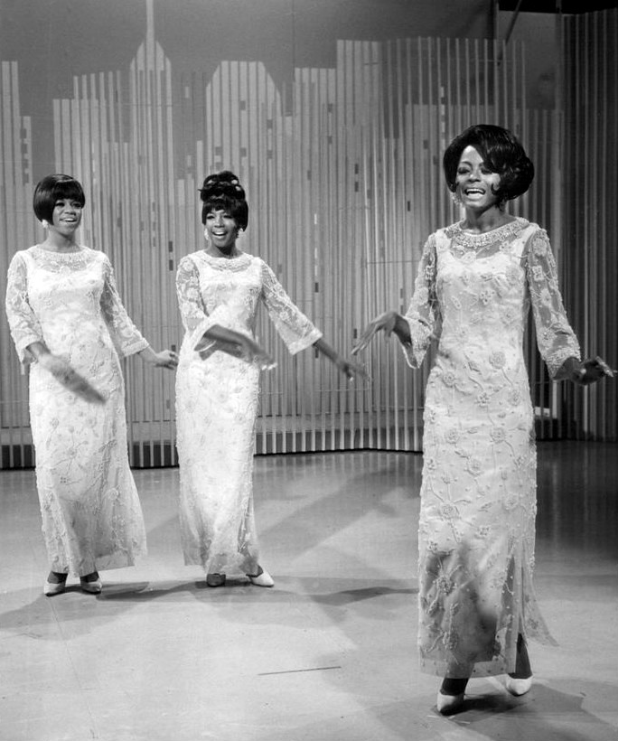

You Keep Me Hangin' On is the 1966 single by The Supremes, written by Holland-Dozier-Holland.
Motown released it on October 12, 1966.
It was the group's eighth No. 1 in the US, with two weeks on top.

Table of Contents
The Story Behind You Keep Me Hangin' On
A Rock Song for The Supremes
Holland-Dozier-Holland set out to write a rock song for the group, according to Wikipedia.
It followed "You Can't Hurry Love," which leaned on gospel-style call and response.
This record went the other way, with a tense, driving beat and no sweetness in the arrangement.
Songfacts reports the working title was "Pay Back."
A Woman Who Cannot Leave
The lyric is sung by a woman who knows her partner no longer loves her.
She asks him to let her go, because she cannot walk away herself.
The spoken aside, "there ain't nothing I can do about it," was planned rather than ad-libbed.
Lamont Dozier said it was meant to make her predicament believable, per Songfacts.
Recording at Hitsville
Eight Sessions
The team recorded the song at Hitsville U.S.A. in Detroit.
Brian Holland and Lamont Dozier produced it.
They cut it over eight sessions with the Supremes and the Funk Brothers before settling on a final version.
The guitars, the drums and Diana Ross's vocals were multitracked.
Florence Ballard and Mary Wilson sang backing vocals.
The Guitar Riff
The stuttering guitar line is the hook everyone remembers.
Dozier took it from a Morse code-like radio signal that stations used before a news bulletin.
Songfacts credits Robert White of the Funk Brothers with playing it.
White is best known for the lead lines on the Temptations' "My Girl."
How It Charted
In the US
The record reached No. 1 on the Billboard Hot 100 for two weeks in November 1966.
It also topped the US R&B chart.
It was the Supremes' eighth No. 1, right after "You Can't Hurry Love."
Billboard called it a "pulsating rocker with the trio in top form," with an "interesting, driving guitar figure throughout."
The group performed it on The Hollywood Palace on October 29, 1966.
Around the World
The record reached No. 8 on the UK Singles Chart.
It also hit No. 1 on Record Mirror's UK R&B chart and No. 3 in Canada.
| Measure | Detail | Result |
|---|---|---|
| Billboard Hot 100 | US pop peak, 1966 | No. 1 (2 weeks) |
| US R&B | Hot R&B peak, 1966 | No. 1 |
| UK Singles Chart | UK peak, 1966 | No. 8 |
| Canada (RPM) | Peak, 1966 | No. 3 |
| Rolling Stone | 500 Greatest Songs of All Time | No. 339 |
| Grammy Hall of Fame | Inducted | 1999 |
Legacy and Covers
Vanilla Fudge
Vanilla Fudge released a slowed-down, heavy version in June 1967.
It reached No. 6 on the Hot 100 and No. 18 in the UK.
Drummer Carmine Appice has said the band recorded it in one take.
Kim Wilde
Kim Wilde released her cover on September 19, 1986.
It reached No. 1 on the Hot 100 for one week in June 1987 and No. 2 in the UK.
That made it one of the few songs to top the US chart for two different acts.
Other Covers
- Wilson Pickett recorded the Vanilla Fudge arrangement in 1969, reaching No. 92 on the Hot 100.
- Rod Stewart included it on his 1977 album Foot Loose and Fancy Free.
- Aretha Franklin covered it in 2014 and played piano on it.
Where It Fits
It is a centerpiece of 1966 and one of the picks on our list of the best 60s songs.
The full story of the trio is in our Supremes biography, and the label's wider sound is covered in the Motown, Soul & R&B hub.
For the start of the hit run, read our Where Did Our Love Go story.
FAQ
Who wrote this Supremes song?
Holland-Dozier-Holland wrote it: Brian Holland, Lamont Dozier and Eddie Holland.
Brian Holland and Lamont Dozier produced it.
When did this Supremes song come out?
Motown released it on October 12, 1966.
It was the lead single from the album The Supremes Sing Holland-Dozier-Holland, and its B-side is Remove This Doubt.
Where did the guitar riff come from?
Lamont Dozier took the stuttering guitar line from a Morse code-like radio signal used before news announcements.
He built it into the track with Brian and Eddie Holland.
Did this Supremes song hit No. 1?
Yes.
It spent two weeks at the top of the Billboard Hot 100 in November 1966.
It also reached No. 1 on the US R&B chart and No. 8 on the UK Singles Chart.
Who has covered this Supremes song?
Vanilla Fudge took a slowed-down version to No. 6 in 1967.
Kim Wilde's 1986 cover reached No. 1 on the Hot 100 in June 1987.
A song about being trapped became one of the group's most driven records.
Wikipedia's entry on the song covers its history and charts in more depth.
Press play above and hear why You Keep Me Hangin' On still hits so hard.